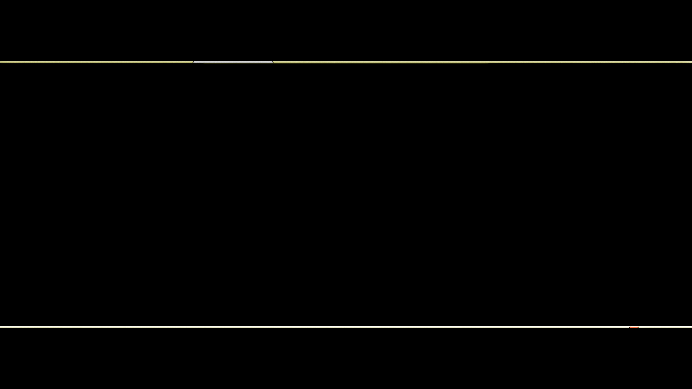

🔍 Aspect Ratio Detection Test
Current Mode:
Detecting...
Viewport Width:
-
Viewport Height:
-
Viewport Ratio:
-
Ultrawide Target (4640:1760):
2.636
Standard Target (16:9):
1.778
Distance to Ultrawide:
-
Distance to Standard:
-
Preview (Simulated Dashboard):

📝 Testing Instructions:
Resize your browser window to test different aspect ratios
Ultrawide mode:
Only the base ultrawide animated border video is visible
Standard mode:
The 16:9 video and drop shadow appear ON TOP of the base video
The ultrawide base video is ALWAYS playing underneath
Watch the "Current Mode" indicator and preview box change as you resize
The distance values show how close you are to each target ratio